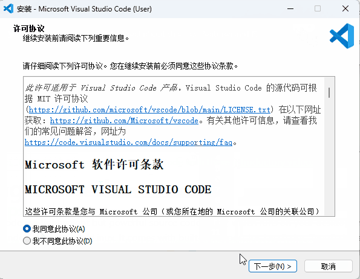
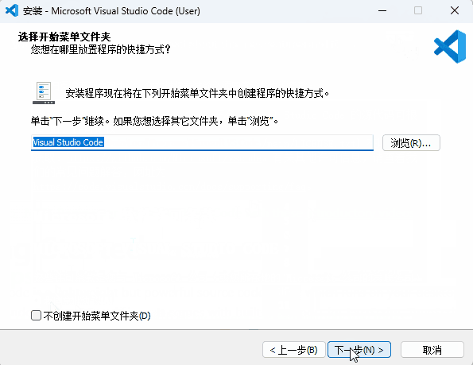
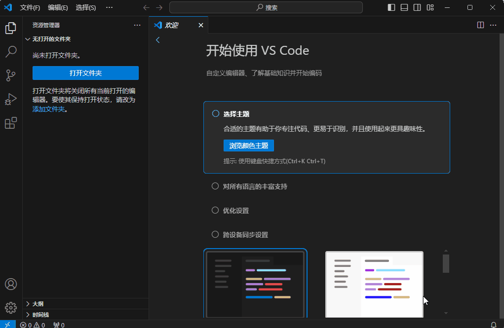
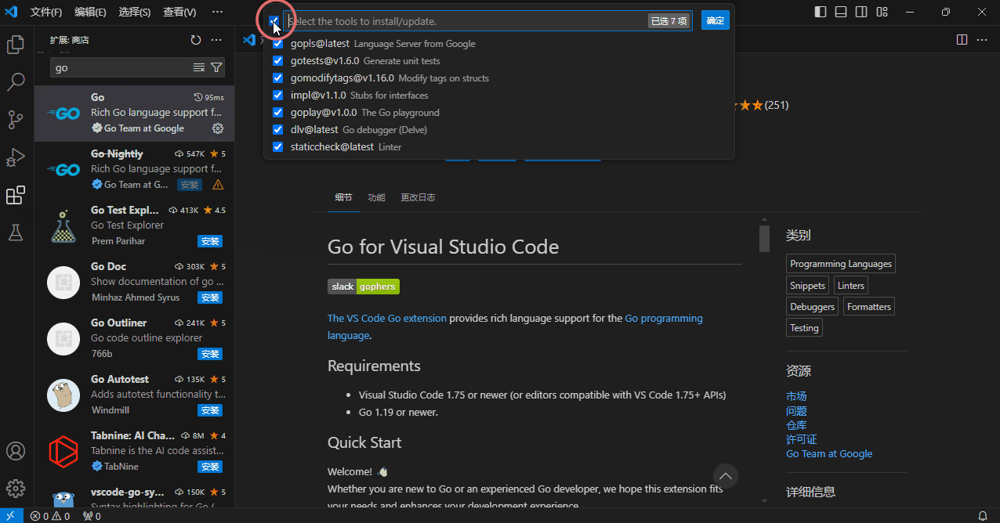
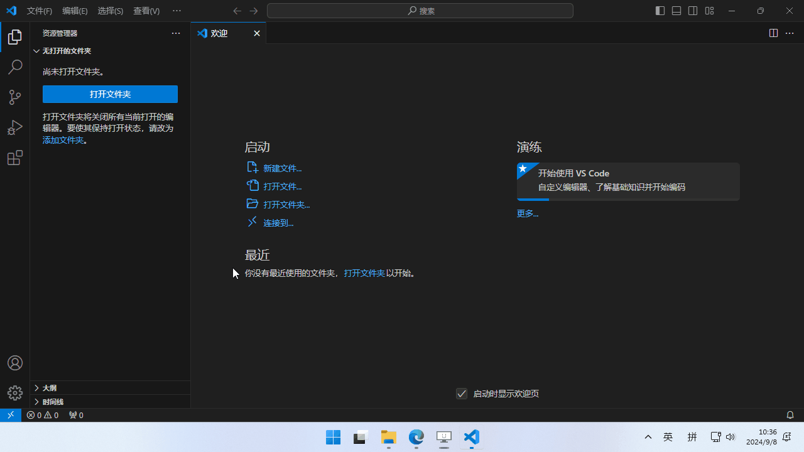
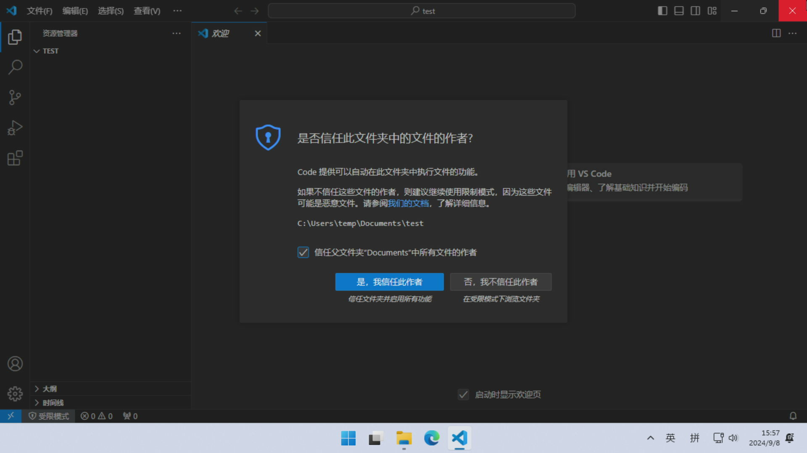
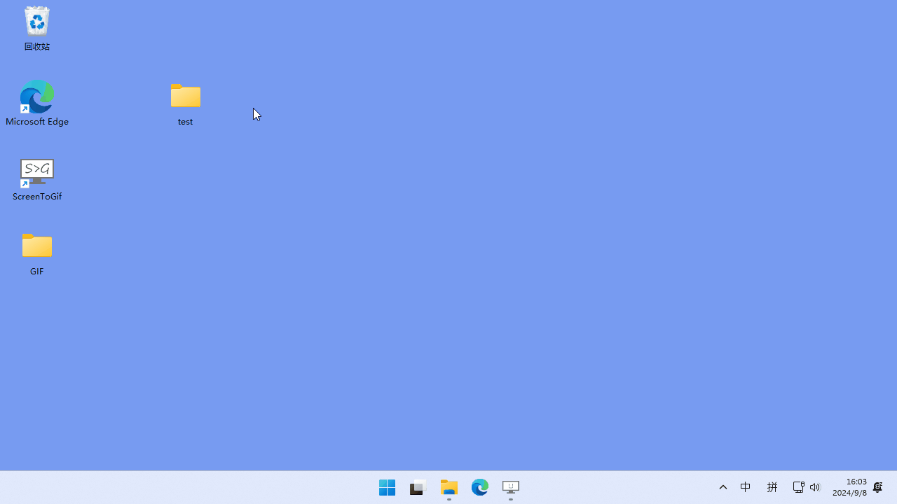

第二章 安装软件，配置环境
本章配合截图，将详细介绍搭建“编程环境”的过程。
2.1 必须的东西
首先，你需要一台装有 Windows 或 Mac （或 Linux）系统的电脑。哪怕是比较旧的设备也可以。
2.2 搭建环境前
为了在准备阶段不出错，首先要确认你当前的输入法，是否正确输入“半角字符”与“英文标点”。
大多数中文输入法，在中文输入状态的时候，默认输入中文标点。
使用日文输入法的用户，经常不小心输入全角字符。半角字符是宽度较窄的字符，而全角字符是宽度较宽的字符。

半角全角，中英标点，两者看起来都非常相似，但实际上是不同的字符。然后包括Golang在内，主流语言使用“半角字符+英文标点”。
在只接受“半角字符”与“英文标点”的地方输入“全角字符”与“中文标点”，会导致程序出错。所以在编写代码的时候，请确保你的输入模式在“半角字符+英文标点”状态。
| 应该使用 | 避免使用 |
|---|---|
A （半角字符） | Ａ （全角字符） |
M （半角字符） | Ｍ （全角字符） |
（半角空格） | （全角空格） |
, （英文逗号） | ， （中文逗号） |
幸好，后文提到的 VSCode 有个功能，就是用黄色方框圈出全角字符等需要注意的字符，因此即使不小心输错了，也能在检查时发现。真是个便利的时代。

2.3 用到的软件
本连载中使用的软件全部免费。心怀感激地下载回来吧。
首先是 Go。这是 Go 编程的必备[1]软件。这名字，简单直接。
另一个是名为 Visual Studio Code (VSCode) 的文本编辑器（文本编辑软件）。实际上，只要能打字就能编程，因此连记事本也能写程序。但 VSCode 里面有辅助编程的大量附加功能，很方便，所以强烈建议安装。
另外，如果您对编辑器有特别的偏好，也可以使用其他编辑器。作者使用的是 Vim，还有其他各种付费编辑器，如 GoLand 等。顺便提一下，写 C/C++ 程序常用的 Visual Studio 的名字和 VSCode 名字很像，但两个软件完全是不同的东西。
2.3.1 [面向有编程经验的人]关于git
在本系列中，可以“不安装”文件版本管理工具 git。
一些较旧的 Go（版本 1.13 之前）教程中，可能会有“必须安装 git ”这样的描述，但在某次 Go 更新以后，git 不再是必选项了。
2.3.2 [面向有编程经验的人]Go 不需要版本切换与管理软件
某些编程语言，会推荐使用版本管理工具来区分多个运行环境版本（比如 python ）。但 Go 向下兼容性很好，基本没有这么做的必要。请放心直接安装最新版 Go 。
Go 有读取 go.mod 中记录的 Go 版本的功能。可以自动下载正确版本的依赖软件（不污染系统 PATH），将相关工具调整为合适的版本。
2.3.3 [面向有编程经验的人]GOPATH 和 GOROOT
现在 Go ，不再需要手动设置环境变量 GOPATH 和 GOROOT 了。那些说需要设置的文章，成文时间比较早，建议不要参考。
2.4 Go 的安装
以下均为撰写时的屏幕截图，可能与最新页面有所不同，敬请谅解。
请访问以下链接（go.dev/dl），如果是 Windows，请点击红框部分。 如果是 Mac，请点击 Apple macOS (ARM64) (M1 以后的新Mac电脑) 或 Apple macOS (x86-64) (M1 之前的老Mac电脑) 下载安装程序。

下载回来的安装程序以后，双击文件运行，一直点击下一步即可完成安装。GO安装完可以直接用，无需重启系统。
动图演示：

2.4 [面向中国大陆用户] Go 的安装 与 GOPROXY
2.4.1 Go 的安装
中国大陆用户会面临一个尴尬的问题，就是“国外网站与github经常连不上”。
一个办法是系统全局挂代理。然后一切如常了。
另一个办法，就是使用国内镜像。
首先，是 GO 安装包本身。大陆用户，可以访问以下的链接下载go（https://studygolang.com/dl）
 *此链接是中国的编程社区在国内提供的 Go 安装包镜像。与官方源相比，更新可能会晚几天。
*此链接是中国的编程社区在国内提供的 Go 安装包镜像。与官方源相比，更新可能会晚几天。
同样的，Windows用户，点击上图红框处下载。
如果是 Mac，用Intel芯片的老机型，点击【Apple macOS macOS 10.15 or later, Intel 64-bit 处理器】。
最近出的M芯片Mac机型，则是【Apple macOS macOS 11 or later, Apple 64-bit 处理器】。
下载之后的安装过程与上面一样，一路下一步即可。
2.4.2 什么是 GOPROXY
中国大陆用户还需要额外设置 GOPROXY，设置镜像服务器加速包括 ebitengine 在内的第三方包的下载。
目前推荐的 GOPROXY 设置为 https://goproxy.cn,direct。
配置中的 goproxy.cn 是一个由大陆 Go 社区维护的镜像服务器，它提供了对 Go 仓库的镜像服务，可以加速 Go 模块的下载速度。详情可以参考网站 https://goproxy.cn。
当你设置 GOPROXY 为 https://goproxy.cn,direct 时，Go 工具链会优先尝试通过 goproxy.cn 获取依赖，如果无法获取，才会回退到直接访问源仓库（direct）。
2.4.3 [面向中国大陆用户]windows 如何设置 GOPROXY
- 打开“开始”并搜索“env”
- 选择“编辑系统环境变量”
- 点击“环境变量…”按钮
- 在“<你的用户名> 的用户变量”章节下（上半部分）
- 点击“新建…”按钮
- 选择“变量名”输入框并输入“GOPROXY”
- 选择“变量值”输入框并输入
https://goproxy.cn,direct
动图演示：

2.4.4 [面向中国大陆用户]macOS 或 Linux 设置 GOPROXY
打开你的终端并执行
export GOPROXY="https://goproxy.cn,direct"
这种做法是一次性的，重启后会失效。为了使其长期有效，可以这样：
echo "export GOPROXY=https://goproxy.cn,direct" >> ~/.profile
source ~/.profile
2.5 VSCode 的安装
VSCode 支持 Windows、macOS、Linux 等多种操作系统。
虽然这里只说明了 Windows 系统的安装方法，但其他操作系统的安装步骤，也基本上是大同小异。
2.5.1 Windows 安装 VSCode
请访问以下链接（ code.visualstudio.com），并点击 Download for Windows 。

运行下载回来的安装程序。
有的时候，会出现这样的弹出窗口，提示“当前安装包不适合为管理员安装，如果想为所有用户安装，请下载专用的安装程序”。在这里点击 OK 继续。

阅读使用许可并勾选同意，然后点击下一步。

确认安装位置，然后点击“下一步”。

会询问你是否在开始菜单中创建快捷方式，请根据您的喜好进行设置，然后点击下一步。

您可以自定义各种选项，根据您的喜好进行设置。个人认为 添加[使用Code打开] 到右键菜单 这很方便，因此推荐启用这个功能。点击“下一步”以继续。

最后会显示你的设置，做最后的确认，没问题的话，就点击安装进行安装。

点击完成，结束安装过程。安装后无需重启，可以立即使用。

动图演示：

2.5.2 VSCode 中文化
VSCode安装已经完成。但默认的界面语言还是英文。英语不熟练的话，用起来很麻烦，所以需要做一下中文化。
左边栏的图标中，有一个类似田 的图标（红圈）。点击此图标，打开扩展功能侧边栏。

在搜索框（红框）中输入 Chinese ，找到并选择 Chinese Language Pack for Visual Studio Code ，然后点击 Install 按钮，安装扩展程序。

安装完成后，右下角会出现提示重启的弹出窗口，请点击 Change Language and Restart 以重启 VSCode。

再启动后，菜单与界面语言变成了汉语。这样就完成了中文化。

动图演示：

2.5.3 VSCode 安装 Go 插件
像中文包一样，VSCode 可以通过安装插件来添加各种功能。当然也有方便 Go 开发的插件，快来安装吧。
先前一样，打开扩展功能侧边栏，在搜索框中输入 go ，并查找 Go 。会有很多结果，但请选择带有表示官方的勾号的选项，并进行安装。

虽然，这项工作可以随时进行。但我一般会先完成 go 开发工具的安装。
从左下角的设置图标（红圈）选择“命令面板...”。或通过键盘快捷键“Ctrl+Shift+p”来打开命令面板。

下图的红框部分，是执行各种命令的面板。在输入框中，输入文字来搜索 Go: Install/Update Tools 这个项目，选择这个命令来执行。

在此处，选择要安装的go开发工具。因此请在输入框左侧的复选框（红圈）中勾选以全部选择，然后点击 确定 进行安装。

接下来会看到 VSCode 文本日志滚啊滚（如果大陆用户因为网络原因，装到一半中途提示安装失败的话，请多尝试几次 ）。
如果最后显示 All tools successfully installed. You are ready to Go. :) ，就表示相关工具表示完成了。
这是一个将英语单词 Go 和 Go 结合的双关句。

动图演示： 
至此，VSCode 的准备工作已全部完成。
2.6 打开目录
要开始开发，需要创建一个放工作文件的目录。目录与“文件夹”是同义词，但在本系列中，我们将尽量遵循 Go 官方的用法，使用“目录”一词。
2.6.1 创建目录的方法 (Windows)
这里将说明如何在桌面上创建目录。
首先在桌面空白处右键点击，选择“新建”子菜单下的“文件夹”。

接下来会要求输入目录名，请输入您喜欢的名称。不过，为了避免欧美软件出现问题，应该仅使用基本的半角英文或数字。在这里，我们用了 test 。

输入目录名后按回车键确认。这样就创建了目录。
目录名称可以通过右键单击目录后选择“重命名”来更改。

2.6.2 用 VSCode 打开目录
创建目录后，从 VSCode 左上角的“文件”中选择“打开文件夹...”，打开文件夹选择界面。

在文件夹选择界面，选择刚刚创建的目录，然后点击“选择文件夹”以打开。

打开目录时，会显示这样的注意事项。这是为了防止误打开危险文件，但由于这是自己创建的目录，所以没有安全问题。点击“是，我信任此作者”。

打开目录，如果左侧的资源管理器（如果未显示，请点击左端的📄图标（红圈））中显示了目录名称（红框。目录名自动大写显示，这没有问题），则表示成功。

此外，如果在安装 VSCode 时勾选了 添加[用 Code 打开] 到右键菜单 ，也可以通过右键单击目录并选择“用 Code 打开”来打开。

动图演示：

2.7 打开终端
接下来的教程，将频繁使用 VSCode 的“终端”功能，因此我们要学会它的使用方法。可以通过菜单栏的“视图”选择“终端”来打开终端（还有其他打开方式）。终端中显示的内容，因操作系统和设置而异。

终端是一个用于“文本”而非“鼠标”操作计算机的工具。可能有些人想起来程序员常常面对的那些神秘黑屏。没错，就是那玩意。

终端是一个在鼠标诞生前就存在的古老工具，至今仍然受到程序员的青睐。
· 记住或拼接命令很困难，但一旦准备好了，批量执行的操作就会变得很简单
· 鼠标只能使用应用程序中存在的功能，但在终端[2]中，可以组合手头的通用工具，创造性地发明需要的新功能
由于有诸如这些的好处，终端最开始可能会让人很头大。但如果你能逐渐熟悉终端，我会很高兴。
顺便提一下，终端的黑色背景，仅仅是一个历史留存。在现代，很多人会设置成更时髦的配色，如果你感兴趣，可以去查一下怎么改。
2.7.1 确认 Go 已经装好了
为了练习终端，我们来确认一下此时 Go 是否能够正常使用吧。
在终端中以半角输入 go version ，然后按下回车键。如果显示了 Go 的版本信息，则表示成功！🎉 这里显示的是 go version go1.21.4 windows/amd64 ，但根据您的环境，内容可能会有所不同。
 命令可以从本文中复制粘贴。如果复制粘贴并输入正确的命令但没有显示版本，则表示安装未正确完成，请再次确认上面的“Go 安装”部分。
命令可以从本文中复制粘贴。如果复制粘贴并输入正确的命令但没有显示版本，则表示安装未正确完成，请再次确认上面的“Go 安装”部分。
2.7.2 使用历史命令
用终端时必备的技巧是“历史命令”。按上箭头键，可以显示刚刚输入的命令，利用这个技巧，可以调用过去的命令。连续按上箭头键可以回溯到更早的命令。如果回溯过头，可以按下箭头键返回。
“上矢印返回并按回车”是终端操作中节省时间的基本技巧，值得记住！
2.7.3 玩一玩示例游戏
为了纪念你学会使用终端，我们来玩一下 Ebitengine 的示例游戏吧。
只需输入这个命令，然后敲一下回车即可。因为命令有点长，建议复制粘贴。此外，首次启动可能需要一些时间。
go run github.com/hajimehoshi/ebiten/v2/examples/flappy@latest
使用此命令可以运行 examples/flappy。请注意音量。

笔者的华丽表现
要注意不要玩得太多，偏离游戏开发正题！
2.7.4 关于终端画面用法的补充
以下是 Windows 中终端屏幕的截图。红线标记的文本中， test 之前的是当前目录（也称为工作目录）， > 是提示符。
当前目录表示“当前工作位置”，提示符表示终端处于“输入接收状态”。在这个提示符后面，输入各种命令是终端操作的基础用法。

当前目录，基本上与在 VSCode 中打开的目录相同，但有时可能需要移动到其他位置。移动时使用 cd 命令，如果需要，请展开以下说明进行阅读。
2.7.5 cd 命令的用法
终端中显示的当前目录，初始状态下与在 VSCode 中打开的目录相同，但可以通过后续的 cd 命令等进行移动。
cd 命令是通过提供文件路径（也称为路径）来移动到该位置的命令。文件路径是用反斜杠 \ 或斜杠 / 分隔的，表示文件或目录位置的文本。文件路径的语法因操作系统而异，因此将分别进行说明。
Windows 下的 cd 命令
Windows的文件路径，分割字符是反斜杠 \ 。不过这个字符比较麻烦，在某些日文环境中可能会显示为圆形标记 ¥ 。
Windows 的完整文件路径从 C: 等驱动器字母开始。例如，用户 tarou 的桌面上的 myprogram 目录是 C:\Users\tarou\Desktop\myprogram 。完整的文件路径称为绝对路径或全路径。
既然有完整的文件路径，当然也有不完整的文件路径。以普通字符开头的文件路径称为相对路径，表示基于当前目录的文件路径。例如，如果当前目录是 C:\Users\tarou\Desktop ，则相对路径 myprogram 指向 C:\Users\tarou\Desktop\myprogram 。
.. 是一个特殊的文件路径，表示当前目录的父目录的相对路径。通过像 ..\.. 这样用分隔符连接，可以表示父目录的父目录。此外，通过像 ..\myprogram 这样将 .. 和普通的相对路径组合，可以在这种情况下指向“父目录的孩子”，即兄弟。
. 也是一个特殊的文件路径，指向当前目录本身。因此， .\child 和 child 指向同一个“当前目录中的 child ”。看起来似乎没有什么意义，但实际上相当常用。
让我们通过实际例子来复习一下。当前目录为 C:\Users\tarou\Pictures 时，要使用相对路径移动到 C:\Users\tarou\Desktop\myprogram ，请输入以下命令。
cd ..\Desktop\myprogram
觉得无法一次弄清楚的话，就分拆成一小块，分步解读吧。
- 最开始的
..的意思，就是移动到C:\Users\tarou\Pictures的父文件夹C:\Users\tarou里面。 - 接下来的
Desktop，会进一步移动到C:\Users\tarou的下一层级，也就是子文件夹C:\Users\tarou\Desktop里面。 - 最后的
myprogram，会继续移动到下一个子文件夹，也就是C:\Users\tarou\Desktop\myprogram里面。
如果使用绝对路径直接移动，这条命令会变成这样：
cd C:\Users\tarou\Desktop\myprogram
macOS（或 Linux） 下的 cd 命令
macOS 文件路径的分割符是斜杠 / 。此外，绝对路径也从 / 开始。例如 /Users/tarou/Desktop 等。
除了相对路径的分隔符与 Windows 的不同，macOS 的相对路径的规则，基本上与windows差不多，因此省略。
我们来看看实际的例子。当前目录为 /Users/tarou/Download 时，要使用相对路径移动到 /Users/tarou/Desktop/myprogram ，请输入以下命令。
cd ../Desktop/myprogram
如果使用绝对路径直接移动，则会变成这样。
cd /Users/tarou/Desktop/myprogram
还有许多与 Windows 的细微差别，但由于数量众多，无法一一列举。总体而言，我认为比 Windows 更易于理解。
2.7.6 表示提示的字符 "$"
在解释终端操作时，习惯在命令前加上表示提示符的字符 $ 以进行强调，并区分输入和输出。例如， go version 的说明如下。
$ go version
go version go1.21.4 windows/amd64
$ 是表示提示符，后续的 go version 是输入的命令，下一行由于不是以 $ 开头，因此是输出。 $ 仅作为提示的示例。同时您的环境可能使用别的字符，并且请注意$不是您输入的文本。
2.7.8 停止命令
有时您可能想中断那些耗时较长的命令。在这种情况下，可以在终端中按“Ctrl+c”，可以中断程序的运行。
本章总结
- Go 是编程的必备工具。
- 编写 Go 代码的文本编辑器，推荐使用 VSCode。但如果有偏好，用其他文本编辑器也可以。
- 和终端交个朋友。
- 正确搭建环境并学会终端的用法后，继续下一步吧。
注释
- [1] 严格来说是错的，还有其他工具可以解释 Go 语言。
- [2] 更确切地说，这东西应该叫 shell。